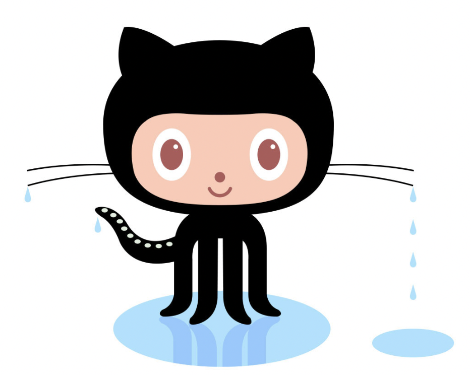

<!DOCTYPE html>
<html lang = "en">

<!-- Name: Yi Mao -->

</head>
    <title>All About GitHub</title>
</head>

<body style="color:#172437; background-color:#9E9F79; font-family: calibri;"></body>
<h1>All About GitHub</h1>

<ul>
    <li>Q. What is a version control system?</li>
    <li>A. It is a tool that helps to record changes made to files and keep track of modifications done in the codes </li>
</ul>
<ul>
    <li>Q. What is Git?</li>
    <li>A. It is a version control system that allows collaboration among programmers</li>
</ul>
<ul>
    <li>Q. What is GitHub?</li>
    <li>A. It is an online software development platform for programmers to store, track, and collaborate on coding projects.</li>
</ul>
<ul>
    <li>Q. What is the difference between Git and GitHub?</li>
    <li>A. Git is a version control system software that is installed locally on the system. GitHub is a hosting service that is hosted on the web.</li>
</ul>
<ul>
    <li>Q. What started Github and how was it started?</li>
    <li>A.  It was created to provide coders the option to host code securely and manage commits to code collaborately and propering</li>
</ul>
<ul>
    <li>Q. What company owns it now?</li>
    <li>A. Microsoft</li>
</ul>
<ul>
    <li>Q. How much does a GitHub account cost?</li>
    <li>A. Free for individuals; 44/yrs for Team collaborations; 231/yrs for enterprise plan</li>
</ul>
<ul>
    <li>Q. What is the Octocat?</li>
    <li>A. It is the mascot of the GitHub.</li>
</ul>


<h3>Git/GitHub terms:</h3>
<ol>
    <li>repository: folders, contains all project files and revision history</li>
    <li>commit: individual change to an account.</li>
    <li>fork:a new repository that shares code and visibility settings with the original “upstream” repository.</li>
    <li>push: updates the remote branch with local commits.</li>
    <li>pull requests: let you tell others about changes you've pushed to a branch in a repository on GitHub</li>
    <li>workflows: a configurable automated process that will run one or more jobs</li>
    <li>raw button: view or copy the raw content of a file without any styling</li>
    <li>blame button: you can view the line-by-line revision history for an entire file,</li>
</ol>

<h4>Sources:</h4>
<ol>
    <li>docs.github.com/en/repositories</li>
    <li>git-scm.com/</li>
</ol>
</body>